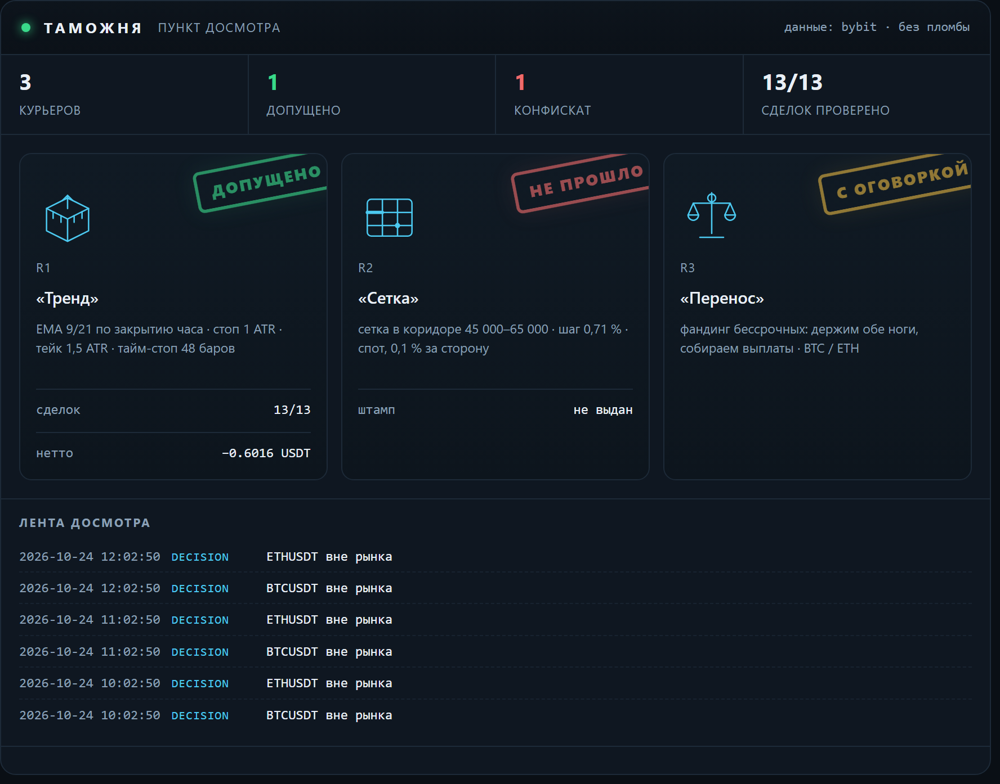

Журнал проверки торговых гипотез: что проверяли, что вышло по факту, сколько съели издержки. Числа берутся из журнала стенда. Не инвестиционная рекомендация.
Таможня
Пункт досмотра заявленных результатов. Стратегии приезжают с грузом обещаний, и каждая проходит проверку по публичным данным биржи: цены существуют, комиссии по тарифу, нетто сходится. Что прошло — получает штамп. Что не прошло — в конфискат, с причиной. Штамп означает «записи подлинные», а не «стратегия прибыльна».

Сверху — тот же терминал, что собирается из журналов: счётчики, эмблемы курьеров, штампы и лента последних событий. Ниже — то же самое текстом, чтобы читалось с телефона и индексировалось поиском.
R1 «Тренд» — допущено
Правило: EMA 9/21 по закрытию часа · стоп 1 ATR · тейк 1,5 ATR · тайм-стоп 48 баров
Декларация: Заявлено до прогона: держать 30 сделок, лимит нотионала 10 % от счёта, стоп дня −1 %. Прибыль не заявлялась — это важно: курьер не обещал доход.
Проверено по публичным свечам, без ключей: 13 из 13 сделок. Сумма нетто −0.6016 USDT.
- BTCUSDT: нетто −0.8746 USDT · комиссии 0.0901 · проверено · с поправкой
- BTCUSDT: нетто −0.5441 USDT · комиссии 0.0896 · проверено
- ETHUSDT: нетто −0.2253 USDT · комиссии 0.0266 · проверено
- ETHUSDT: нетто −0.1513 USDT · комиссии 0.0265 · проверено
- ETHUSDT: нетто +0.1984 USDT · комиссии 0.0262 · проверено
- ETHUSDT: нетто +0.1617 USDT · комиссии 0.0260 · проверено
- ETHUSDT: нетто +0.2645 USDT · комиссии 0.0263 · проверено
- BTCUSDT: нетто +0.6246 USDT · комиссии 0.0897 · проверено
- BTCUSDT: нетто −0.5881 USDT · комиссии 0.0910 · проверено
- ETHUSDT: нетто −0.2403 USDT · комиссии 0.0270 · проверено
- BTCUSDT: нетто +0.6908 USDT · комиссии 0.0908 · проверено
- ETHUSDT: нетто +0.2898 USDT · комиссии 0.0267 · проверено
- ETHUSDT: нетто −0.2077 USDT · комиссии 0.0263 · проверено
журнал sha256 7b8d9ca519565db9… · проверяльщик verify-1
Штамп означает: записи подлинные, а не что стратегия прибыльна. Курьер в минусе, и минус тоже стоит на штампе — иначе это была бы не проверка, а реклама.
источник: verify-report.json
R2 «Сетка» — не прошло
Правило: сетка в коридоре 45 000–65 000 · шаг 0,71 % · спот, 0,1 % за сторону
Декларация: Заявлено: «44 % урожая уходит бирже в виде комиссий». Кроме того — перевес над простым владением монетой.
Что сошлось:
- сами числа пересчитаны и воспроизводятся: коридор 45–65k был активен 23 % всей истории и 28 % последних двух лет
Что не сошлось:
- 44 % не подтвердилось: при шаге 0,71 % и тарифе 0,1 % комиссия съедает 28,3 % шага. Чтобы получить 44 %, нужен шаг 0,45 % — это около 80 уровней, а не 50
- от урожая доля комиссий 85,5 % за всю историю и 49,6 % за последние два года — тоже не 44 %
- перевес над владением посчитан на тарифе 0,055 %: при нём +1,32 п. п., на розничном 0,1 % — −0,72 п. п. То есть перевес исчезает
- семилетний тест стартовал в сентябре 2019 при биткоине около 10 000 — ниже коридора. Он говорит, что фиксированный коридор не подходит для периода, а не что сетка отстаёт
источник: lab_grid.py, пересчёт 17.10.2026
R3 «Перенос» — с оговоркой
Правило: фандинг бессрочных: держим обе ноги, собираем выплаты · BTC / ETH
Декларация: Заявлено: около 11,9 % в год от выплат фандинга при просадке выплатной кривой меньше 2 %.
Что сошлось:
- выплаты взяты из публичной истории биржи, ключей не нужно: BTC — 7 190 выплат с 25.03.2020, ETH — 6 561 с 21.10.2020
- сумма сходится: +83,4 % и +83,2 % за 6,6 и 6,0 года — те самые ~11,9 % в год
- худшая просадка выплатной кривой: −1,65 % и −1,97 %
Что не сошлось:
- оговорка 1: премию сжали — 2021 год дал +38,3 %, 2026 — +1,96 %. Прошлое не повторяется
- оговорка 2: вход-выход стоит около 0,31 %, капитала нужно 1,2 от нотионала, текущий базис −0,082 % против входа
- оговорка 3: риск площадки. История FTX в этой же таблице выглядела так же прилично
источник: публичная история фандинга Bybit, замер 17.10.2026
Конфискат
«Сетка»: заявленные 44 % комиссий не подтвердились. Досмотр показал 28,3 % от шага и 85,5 % от урожая — цифра хуже заявленной по форме, но лучше по смыслу: сетку убивает не размер шага, а то, что урожай почти весь уходит в комиссии. Это и вышло в выпуск — с поправкой, а не с красивой цифрой.
Досмотр идёт по публичным минутным свечам и публичной истории фандинга — ключей у проверяющего нет, и он может повторить проверку сам.
Контент образовательный, не является инвестиционной рекомендацией. Торговля связана с риском потери капитала.